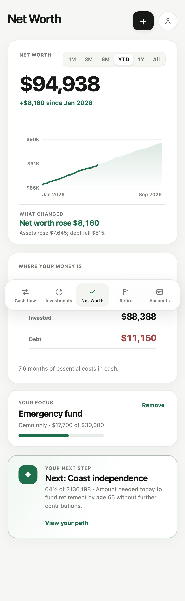

Tyler Le.
Software Engineer.
I’m a Software Engineer at Google, working in AI Observability.
Open a company to read more, or choose a section below.
What I work on
API platforms, backend services, and distributed systems.
Experience
Open a role for a short overview.
Clarity
Networth
A personal finance app for tracking net worth, cash flow, investments, and retirement goals.

About me
I’m a software engineer at Google, working in AI Observability. Previously, I worked on shared API infrastructure and backend services at Coursera.
Previously, I worked at Amazon on advertising systems and data pipelines. Earlier internships involved software for aircraft and lab instruments.
I studied Computer Science at UC San Diego.
Contact
Email mele.tyler.h@gmail.com